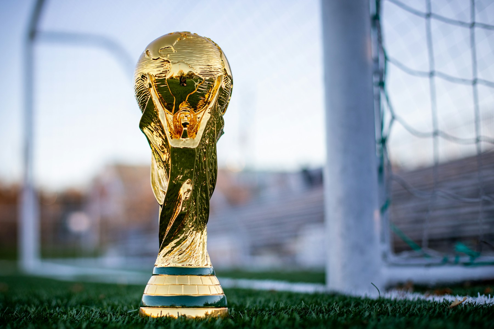

A Copa do Mundo de 2026 termina com uma decisão à altura do maior torneio já organizado pela FIFA. Espanha e Argentina se enfrentam no domingo, 19 de julho, no New York New Jersey Stadium, em East Rutherford, nos Estados Unidos. A partida está marcada para as 16h, no horário de Brasília.
De um lado, a Espanha tenta conquistar sua segunda estrela e confirmar o surgimento de uma nova geração dominante. Do outro, a Argentina defende o título obtido em 2022 e busca um feito que não acontece desde o Brasil de Pelé: ser campeã mundial em duas edições consecutivas.
A decisão também reúne o confronto estatístico mais simbólico desta Copa. A Argentina chega com o melhor ataque do torneio.. A Espanha apresenta a melhor defesa, com apenas um gol sofrido no mesmo número de partidas.
Além da taça, a final concentra algumas das principais histórias do futebol internacional contemporâneo. Lionel Messi chega a mais uma decisão de Copa aos 39 anos, enquanto Lamine Yamal representa o talento de uma geração espanhola construída para permanecer durante muitos anos no mais alto nível. É o encontro entre uma seleção que aprendeu a vencer grandes decisões e outra que tenta transformar domínio técnico em uma nova era histórica.
Uma final entre campeãs mundiais
A seleção argentina conquistou os títulos de 1978, 1986 e 2022. Também chegou às finais de 1930, 1990 e 2014. A decisão de 2026 é a sétima participação argentina no jogo que vale a taça.
A Espanha vive uma história diferente. Apesar de sua tradição, a seleção disputou apenas uma final antes de 2026. Em 2010, na África do Sul, venceu a Holanda por 1 a 0 na prorrogação, com o gol histórico de Andrés Iniesta para conquistar seu primeiro e único título.
O retorno espanhol à decisão encerra uma espera de 16 anos. Para a Argentina, representa a oportunidade de conquistar o quarto título e igualar-se à Itália e à Alemanha entre as seleções mais vencedoras da história do torneio.
A final também funciona como um encontro entre os campeões continentais de 2024. A Espanha levantou a Eurocopa, enquanto a Argentina conquistou a Copa América. O duelo que o futebol internacional aguardava ganhou o maior palco possível: a partida decisiva de uma Copa do Mundo.
Melhor ataque contra melhor defesa
A oposição entre o ataque da Argentina e a defesa da Espanha ajuda a explicar por que a final de 2026 desperta tanta expectativa. Não se trata apenas de um contraste estatístico. As duas seleções chegam ao jogo decisivo apoiadas justamente nos setores que mais influenciaram suas campanhas.
A Argentina marcou 19 gols e balançou a rede em todos os seus sete jogos. A seleção anotou oito vezes na primeira fase e manteve uma média elevada mesmo quando o nível de dificuldade aumentou no mata-mata. Messi, Lautaro Martínez, Enzo Fernández e outros jogadores dividiram as responsabilidades ofensivas, dando a Lionel Scaloni diferentes formas de atacar.
O time argentino pode construir por meio de trocas curtas, acelerar após recuperações de bola ou concentrar o jogo em Messi entre as linhas. Também demonstrou força nos minutos finais. A virada sobre a Inglaterra na semifinal, com gols aos 85 minutos e o outro nos acréscimos, foi a maior demonstração de que a equipe mantém poder ofensivo mesmo quando a partida parece escapar.
A Espanha sofreu apenas um gol em sete jogos e terminou seis deles sem ser vazada. O único adversário que conseguiu superar Unai Simón foi a Bélgica, na vitória espanhola por 2 a 1 nas quartas de final.
O número se torna ainda mais expressivo porque a Espanha enfrentou adversários com jogadores ofensivos de elite. Na semifinal, reduziu a França de Kylian Mbappé, Ousmane Dembélé e Michael Olise a apenas duas finalizações certas. A defesa espanhola não se limita aos zagueiros ou ao goleiro: começa na pressão do ataque, passa pela proteção de Rodri e depende de uma ocupação coletiva muito organizada.
O jogo, assim, apresenta uma pergunta central. A Argentina conseguirá encontrar espaços contra a defesa mais resistente da Copa, ou a Espanha será capaz de interromper o ataque mais produtivo do torneio?
Como a Espanha chegou à final
Desembarcou no Mundial como uma das principais candidatas ao título. O começo, entretanto, exigiu respostas imediatas. A equipe empatou com Cabo Verde na estreia, mas cresceu ao longo da competição e chegou à final sem perder. A campanha espanhola até a decisão teve seis vitórias e um empate.
Depois do empate sem gols com Cabo Verde, a Espanha goleou a Arábia Saudita por 4 a 0 e venceu o Uruguai por 1 a 0, garantindo a liderança de seu grupo. No mata-mata, manteve o controle defensivo, eliminou Portugal com um gol de Mikel Merino nos acréscimos, superou a Bélgica por 2 a 1 e dominou a França na semifinal.
Esse controle apareceu de maneira clara contra os franceses. A Espanha venceu por 2 a 0 no Dallas Stadium, em Arlington, com gols de Mikel Oyarzabal e Pedro Porro. Oyarzabal abriu o placar em cobrança de pênalti aos 22 minutos. Porro ampliou aos 58, depois de uma combinação ofensiva com Dani Olmo.
A França chegou à semifinal com um ataque repleto de estrelas, liderado por Mbappé, Dembélé e Olise. Mesmo assim, encontrou pouco espaço. A Espanha controlou a posse, pressionou a saída adversária e reduziu uma das equipes mais perigosas da competição a apenas duas finalizações certas.
A classificação confirmou uma característica importante do time espanhol: a capacidade de manter a identidade mesmo em partidas eliminatórias. A equipe gosta de ter a bola, mas sua força não depende apenas da posse. O sistema também funciona sem ela, com pressão coordenada, recuperação rápida e ocupação eficiente dos espaços.
Como a Argentina chegou à decisão
Alcançou a final com sete vitórias em sete partidas e o melhor ataque da Copa, com 19 gols. A campanha manteve a seleção campeã de 2022 invicta em seus últimos 13 jogos de Mundial.
Desde a fase de grupos, a equipe mostrou capacidade ofensiva e poder de decisão. A goleada sobre a Argélia, marcada por uma atuação de destaque de Messi, foi um dos primeiros sinais da força argentina. .
A estréia com vitória por 3 a 0 sobre a Argélia, em uma partida na qual Messi marcou três vezes. Depois, o camisa 10 fez os dois gols do triunfo por 2 a 0 contra a Áustria e voltou a marcar na vitória por 3 a 1 sobre a Jordânia. O time terminou a primeira fase com nove pontos, oito gols e uma campanha perfeita.
No mata-mata, a equipe precisou combinar talento e resistência. Diante de Cabo Verde, venceu por 3 a 2 após a prorrogação. Messi abriu o placar, Lautaro Martínez marcou no começo do tempo extra e um gol contra completou a classificação argentina em uma partida muito mais difícil do que o favoritismo indicava.
O teste mais dramático aconteceu na semifinal. A Inglaterra abriu o placar aos 55 minutos, com Anthony Gordon, e parecia próxima de retornar a uma final pela primeira vez desde 1966. A Argentina, entretanto, reagiu na reta final.
Enzo Fernández empatou aos 85 minutos. Já nos acréscimos, Lautaro Martínez marcou o gol da virada e definiu a vitória por 2 a 1. Messi participou diretamente dos dois gols com assistências, assumindo novamente o protagonismo quando a eliminação parecia próxima.
A remontada reforçou a identidade desenvolvida pela seleção comandada por Lionel Scaloni. Não precisa controlar todos os minutos para definir o destino de uma partida. O time sabe sofrer, administra diferentes cenários e possui jogadores acostumados a tomar decisões sob enorme pressão.
Uma oportunidade histórica
Lionel Messi será inevitavelmente o centro das atenções. Campeão em 2022, o camisa 10 argentino chega à final de 2026 com a possibilidade de comandar sua seleção em um bicampeonato consecutivo.
A última seleção a conseguir o feito foi o Brasil, vencedor das Copas de 1958 e 1962. Antes dos brasileiros, apenas a Itália havia conquistado duas edições seguidas, em 1934 e 1938.
A presença de Messi também conecta diferentes gerações. Ele disputou sua primeira Copa em 2006, tornou-se capitão, sofreu derrotas dolorosas, perdeu a final de 2014 e finalmente levantou a taça em 2022. Quatro anos depois, está novamente a uma vitória do título.
O impacto do argentino, porém, não se resume aos gols. Na semifinal contra a Inglaterra, foi sua leitura de jogo que ajudou a desmontar a defesa adversária nos minutos finais. A participação nas duas jogadas decisivas mostrou que sua influência permanece central, mesmo em uma equipe mais experiente e coletivamente preparada.
Messi chegou à decisão com oito gols nesta edição. Além da produção ofensiva, aumentou para 12 seu recorde de assistências em Copas do Mundo e atingiu 21 gols acumulados no torneio, ampliando uma coleção de marcas que atravessa cinco edições diferentes.
O símbolo da nova Espanha
Do outro lado estará Lamine Yamal, principal jogador da renovação espanhola. O atacante chega à final aos 19 anos e já ocupa um papel importante em uma seleção que combina juventude, controle técnico e maturidade competitiva.
Yamal foi determinante na semifinal ao sofrer o pênalti convertido por Oyarzabal. Sua movimentação pela direita, a capacidade de enfrentar defensores no um contra um e a qualidade para criar jogadas dão à Espanha uma alternativa importante contra sistemas mais fechados.
O duelo entre Messi e Yamal possui um peso simbólico evidente. Não se trata apenas de um confronto entre jogadores de idades diferentes. É o encontro entre uma carreira já consagrada como uma das maiores da história e um talento que começa a construir seu próprio caminho no futebol mundial.
A Espanha, no entanto, não depende apenas de Yamal. Rodri organiza o meio-campo, Dani Olmo acrescenta criatividade entre as linhas, Oyarzabal oferece mobilidade no ataque e Pedro Porro participa das ações ofensivas sem abandonar suas responsabilidades defensivas. O conjunto é o maior argumento espanhol.
Uma carreira marcada por gols em finais
Mikel Oyarzabal chega à final como um dos personagens mais interessantes da seleção espanhola. O atacante marcou cinco gols na Copa de 2026 e igualou a melhor marca de um espanhol em uma única edição do Mundial, alcançada anteriormente por Emilio Butragueño em 1986 e David Villa em 2010.
Seu gol de pênalti contra a França não decidiu uma final, mas levou a Espanha ao jogo do título e reforçou uma característica de sua carreira. Antes da decisão mundial, Oyarzabal havia disputado seis finais no futebol profissional e marcado em todas elas.
- Copa do Rei de 2019/20: Oyarzabal marcou de pênalti o único gol da vitória da Real Sociedad sobre o Athletic Bilbao. E deu ao clube de San Sebastián seu primeiro grande título desde 1987.
- Final olímpica de Tóquio 2020: o atacante marcou o gol de empate da Espanha contra o Brasil. A seleção brasileira venceu por 2 a 1 na prorrogação, mas Oyarzabal voltou a aparecer em uma partida decisiva.
- Final da Liga das Nações de 2021: abriu o placar contra a França aos 64 minutos. Benzema empatou dois minutos depois, e Mbappé marcou o gol do título francês no fim da partida.
- Final da Eurocopa de 2024: saiu do banco e marcou aos 86 minutos o gol da vitória espanhola por 2 a 1 sobre a Inglaterra. Foi o lance que confirmou o quarto título europeu da Espanha e transformou Oyarzabal em herói nacional.
- Final da Liga das Nações de 2025: marcou o segundo gol espanhol no empate por 2 a 2 com Portugal. A seleção portuguesa ficou com o título após vencer a disputa de pênaltis por 5 a 3.
- Final da Copa do Rei de 2026: marcou de pênalti contra o Atlético de Madrid. O jogo terminou empatado por 2 a 2 após a prorrogação, e a Real Sociedad conquistou o título ao vencer a disputa por pênaltis por 4 a 3.
O retrospecto mostra um jogador particularmente confortável sob pressão. Oyarzabal marcou em decisões vencidas e perdidas, em partidas por clube e seleção, no tempo normal e em diferentes contextos competitivos. A final da Copa do Mundo será a sétima decisão de sua carreira profissional e a maior oportunidade para ampliar essa reputação.
O confronto de estilos
A final reúne duas equipes capazes de controlar o jogo de maneiras diferentes.
A Espanha procura dominar por meio da posse, das trocas rápidas de passes e da pressão imediatamente após perder a bola. Seu sistema defensivo começa no ataque, com os jogadores reduzindo o tempo de decisão dos adversários.
A Argentina é mais adaptável. Pode pressionar, recuar, acelerar pelos lados ou buscar Messi entre as linhas. Scaloni construiu uma equipe preparada para mudar o desenho durante a partida sem perder competitividade.
Um dos duelos mais importantes acontecerá no meio-campo. A Argentina precisará impedir que Rodri encontre liberdade para organizar a saída espanhola. A Espanha, por sua vez, terá de controlar os espaços ocupados por Messi e evitar que ele receba de frente para a defesa.
Outro ponto importante será o espaço atrás dos laterais espanhóis. Pedro Porro e Marc Cucurella participam ativamente da construção e ajudam a pressionar no campo adversário. Quando a Espanha perde a bola, porém, a Argentina pode tentar explorar esses setores com lançamentos rápidos e movimentações.
Para a Espanha, a chave pode estar na circulação da bola até encontrar Lamine Yamal em situações de um contra um. Se conseguir obrigar a defesa argentina a deslocar sua cobertura para o lado direito espanhol, a equipe poderá abrir espaços para Oyarzabal, Dani Olmo e as infiltrações dos meio-campistas.
As bolas paradas também podem ter peso. Em uma final equilibrada, faltas laterais, escanteios e segundas bolas frequentemente definem partidas que oferecem poucas oportunidades claras.
Histórico do confronto
A final de 2026 será o 15º encontro entre as seleções principais de Argentina e Espanha. O retrospecto não poderia ser mais equilibrado: são seis vitórias para cada lado e dois empates. A Espanha marcou 19 gols, enquanto a Argentina fez 17.
Apesar de as duas seleções estarem entre as camisas mais importantes do futebol mundial, apenas um dos 14 encontros anteriores aconteceu em uma Copa do Mundo. Foi em 13 de julho de 1966, na fase de grupos do Mundial da Inglaterra.
Naquele jogo, disputado no Villa Park, em Birmingham, a Argentina venceu por 2 a 1. Luis Artime marcou os dois gols argentinos, aos 65 e aos 79 minutos. Pirri fez o gol espanhol aos 67. Seis décadas depois, as seleções voltam a se enfrentar em uma Copa, agora no jogo que vale o título.
O confronto mais recente aconteceu em março de 2018, no estádio Metropolitano, em Madri. A Espanha venceu por 6 a 1, com três gols de Isco, além de Diego Costa, Thiago Alcântara e Iago Aspas. Nicolás Otamendi marcou para a Argentina. Messi não entrou em campo naquela partida.
A maior vitória argentina no confronto ocorreu em setembro de 2010. Pouco menos de dois meses depois de conquistar sua primeira Copa do Mundo, a Espanha visitou Buenos Aires e perdeu por 4 a 1.
Essas goleadas, porém, têm pouco valor como indicação para a final de 2026. Os elencos, os treinadores e os contextos são completamente diferentes. O principal elemento histórico é o equilíbrio.
O duelo na casamata
A final também terá uma ligação particular entre os treinadores. Lionel Scaloni realizou cursos na academia da Federação Espanhola e teve Luis de la Fuente como um dos professores em 2017, pouco depois de encerrar a carreira como jogador.
A relação ultrapassa a sala de aula. Scaloni construiu parte importante de sua vida na Espanha, atuou por Deportivo La Coruña, Racing Santander e Mallorca, vive no país, tem esposa espanhola e filhos também nascidos no país.
De la Fuente e Scaloni conquistaram os principais títulos continentais de 2024. Agora, antigo professor e ex-aluno estarão em bancos opostos na maior partida do futebol mundial.
O palco da decisão
A final será disputada no New York New Jersey Stadium, nome utilizado pela FIFA para o estádio conhecido comercialmente como MetLife Stadium. A arena está localizada em East Rutherford, no estado de Nova Jersey, e recebe normalmente os jogos do New York Giants e do New York Jets, equipes da NFL.
O estádio recebeu oito partidas da Copa de 2026, incluindo a decisão. A escolha da região de Nova York e Nova Jersey colocou o encerramento do torneio em um dos maiores mercados esportivos e comerciais do planeta.
A partida encerra uma edição histórica. A Copa de 2026 foi a primeira com 48 seleções, 12 grupos, uma fase de 32 avos de final e 104 jogos. Também foi a primeira organizada conjuntamente por três países: Estados Unidos, México e Canadá.
Para a Espanha, o título significaria a confirmação de uma nova era. Depois de vencer a Eurocopa de 2024, a seleção passaria a reunir novamente os principais troféus de seleções, repetindo parte do domínio vivido entre 2008 e 2012.
A conquista também poderia estabelecer um recorde defensivo. Nenhuma seleção campeã mundial terminou uma edição sofrendo menos de dois gols. A Espanha chega à final com apenas um gol concedido e pode encerrar a Copa com uma das campanhas defensivas mais marcantes da história.
Para a Argentina, a conquista consolidaria uma das maiores sequências da história do futebol internacional. O time chegaria ao quarto título mundial, completaria o bicampeonato e prolongaria o ciclo vitorioso iniciado com a Copa América de 2021.
Também existe uma diferença importante na pressão. A Argentina entra como atual campeã e carrega a expectativa de transformar a possível última Copa de Messi em outro título. A Espanha chega com um grupo mais jovem, mas seu desempenho defensivo e a longa sequência invicta aumentam a responsabilidade.
A decisão não coloca frente a frente apenas duas camisas tradicionais. Ela reúne os dois projetos mais consistentes do período recente do futebol de seleções.
Espanha e Argentina chegam à decisão por caminhos diferentes, mas sustentadas pela mesma combinação de talento, organização e maturidade. Uma busca a segunda estrela e a confirmação de uma geração renovada. A outra tenta defender o título, alcançar a quarta conquista e colocar o nome de Messi no centro de mais um capítulo histórico.
No encerramento da maior Copa do Mundo já realizada, o melhor ataque encontrará a melhor defesa. Apenas uma seleção deixará Nova Jersey com a taça.